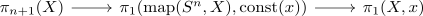
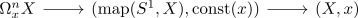
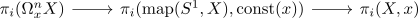

homotopy groups of the free loop space
Proposition
Let $X,x$ be a pointed anima Then for $i \geq 2$ there exists an canonical equivalence
\begin{align*}
\pi_i(\mathrm{map}(S^n,X).\mathrm{const}(x)) \cong \pi_{n+i}(X,x) \oplus \pi_i(X,x)
\end{align*}
and for $n = 1 there exists a right split fiber sequence

see:
Proof
consider the fiber sequence of unpointed mapping space Then consider the fiber sequence

(cf. fiber sequence of unpointed mapping space)
Then it is right split, so in particular we get a split exact sequence

resp. an iso
\begin{align*}
\pi_{n+i}(\Omega_x X) \oplus \pi_i(X,x) \rar & \pi_{i}(\mathrm{map}(S^1, X))
\end{align*}
for $i \geq 2$ and for $i = 1$ we still get the sequence